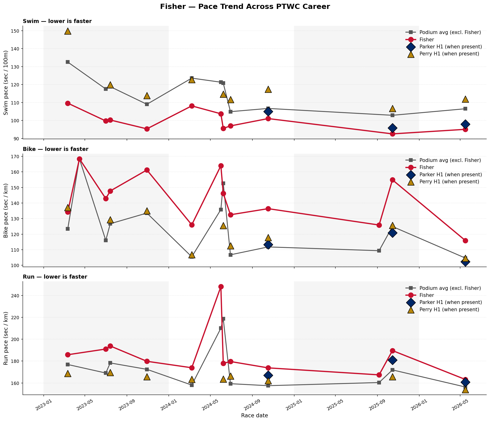
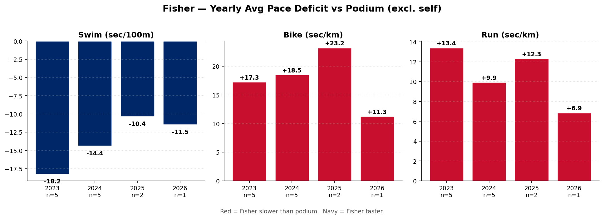
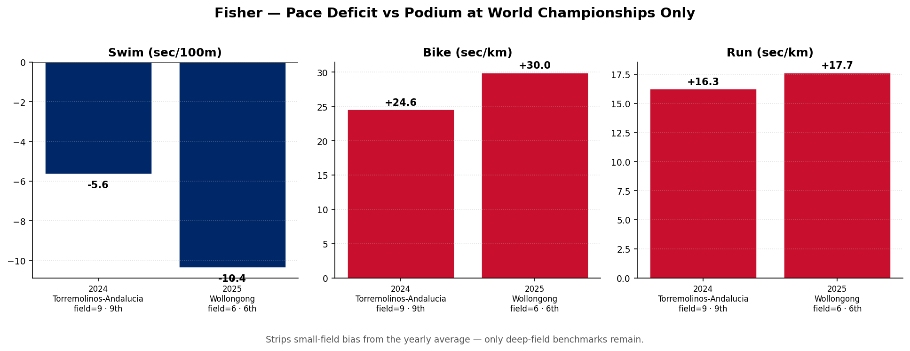
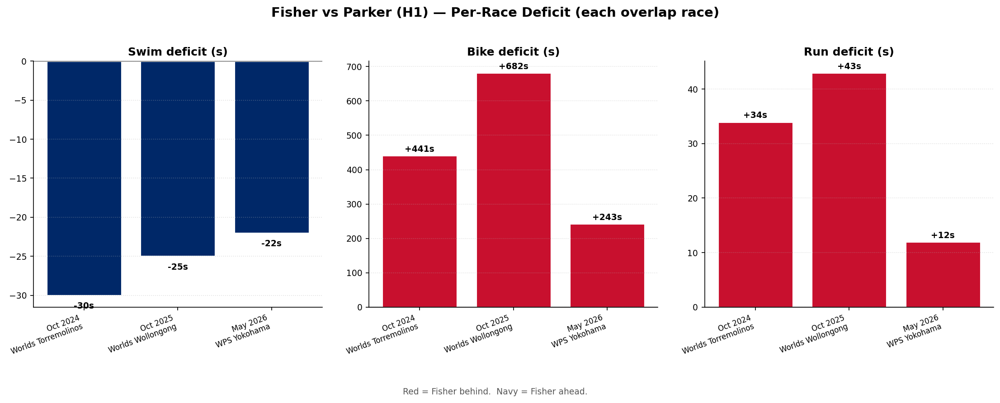
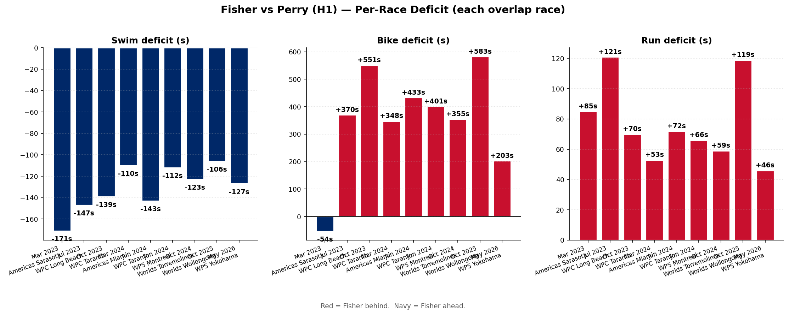

Skyler Fisher has been a consistent Para Cup podium presence and produced her closest-ever deep-field gap to the world leaders at Yokohama 2026. Across her 14 PTWC race finishes she has 5 Para Cup podium results, and at the 2026 Yokohama World Para Series she finished within 384s of Parker (defending Paralympic gold) and 45s of Perry — her closest gap to Parker in any of her 3 head-to-head races.

Fisher (red), podium average excluding herself (grey), Parker H1 (navy diamonds) and Perry H1 (gold triangles) highlighted at the races they attended. Lower = faster.


Worlds-only deficit — removes small-field bias from the all-races yearly average.
| Swim Δ (sec/100m) | Bike Δ (sec/km) | Run Δ (sec/km) | Pos | Field size | Venue | |
|---|---|---|---|---|---|---|
| year | ||||||
| 2024 | -5.64 | 24.59 | 16.27 | 9.0 | 9.0 | Torremolinos-Andalucia |
| 2025 | -10.36 | 29.98 | 17.67 | 6.0 | 6.0 | Wollongong |


| n races | Swim Δ (sec/100m) | Bike Δ (sec/km) | Run Δ (sec/km) | Avg pos | |
|---|---|---|---|---|---|
| year | |||||
| 2023 | 5 | -18.25 | 17.27 | 13.42 | 3.2 |
| 2024 | 5 | -14.37 | 18.51 | 9.93 | 5.0 |
| 2025 | 2 | -10.36 | 23.24 | 12.33 | 4.0 |
| 2026 | 1 | -11.47 | 11.27 | 6.87 | 6.0 |
| n | total | swim | bike | run | |
|---|---|---|---|---|---|
| year | |||||
| 2024 | 1 | 564.0 | -30.0 | 441.0 | 34.0 |
| 2025 | 1 | 847.0 | -25.0 | 682.0 | 43.0 |
| 2026 | 1 | 384.0 | -22.0 | 243.0 | 12.0 |
| n | total | swim | bike | run | |
|---|---|---|---|---|---|
| year | |||||
| 2023 | 3 | 418.0 | -152.0 | 289.0 | 92.0 |
| 2024 | 4 | 523.0 | -122.0 | 384.0 | 62.0 |
| 2025 | 1 | 777.0 | -106.0 | 583.0 | 119.0 |
| 2026 | 1 | 279.0 | -127.0 | 203.0 | 46.0 |
Generated 2026-05-21 17:25 — Source: World Triathlon API (race_results, events tables).